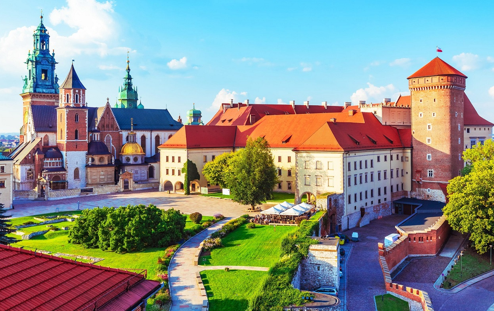

Descoperă Cracovia - Orașul istoric și cultural din Polonia
Cracovia este un oraș plin de istorie și cultură din Polonia, cu atracții captivante pentru vizitatori:
-

Centrul vechi pitoresc
Străzile pietruite și piețele medievale găzduiesc clădiri istorice și biserici impresionante.
-

Castelul Wawel și Catedrala
Complexul Wawel găzduiește un castel regal și o catedrală cu morminte regale.
-

Cartierul evreiesc Kazimierz
Zonele precum Kazimierz păstrează istoria evreilor din Cracovia și oferă o atmosferă boemă.
-

Piața Rynek și Turnul Town Hall
Piața centrală Rynek este înconjurată de cafenele, restaurante și Turnul Town Hall.
-

Fabrica Schindler
Fabrica asociată lui Oskar Schindler prezintă istoria Holocaustului și a salvării evreilor.
Concluzii
Cracovia rămâne o bijuterie culturală a Poloniei, cu moștenire istorică și atmosferă captivantă.